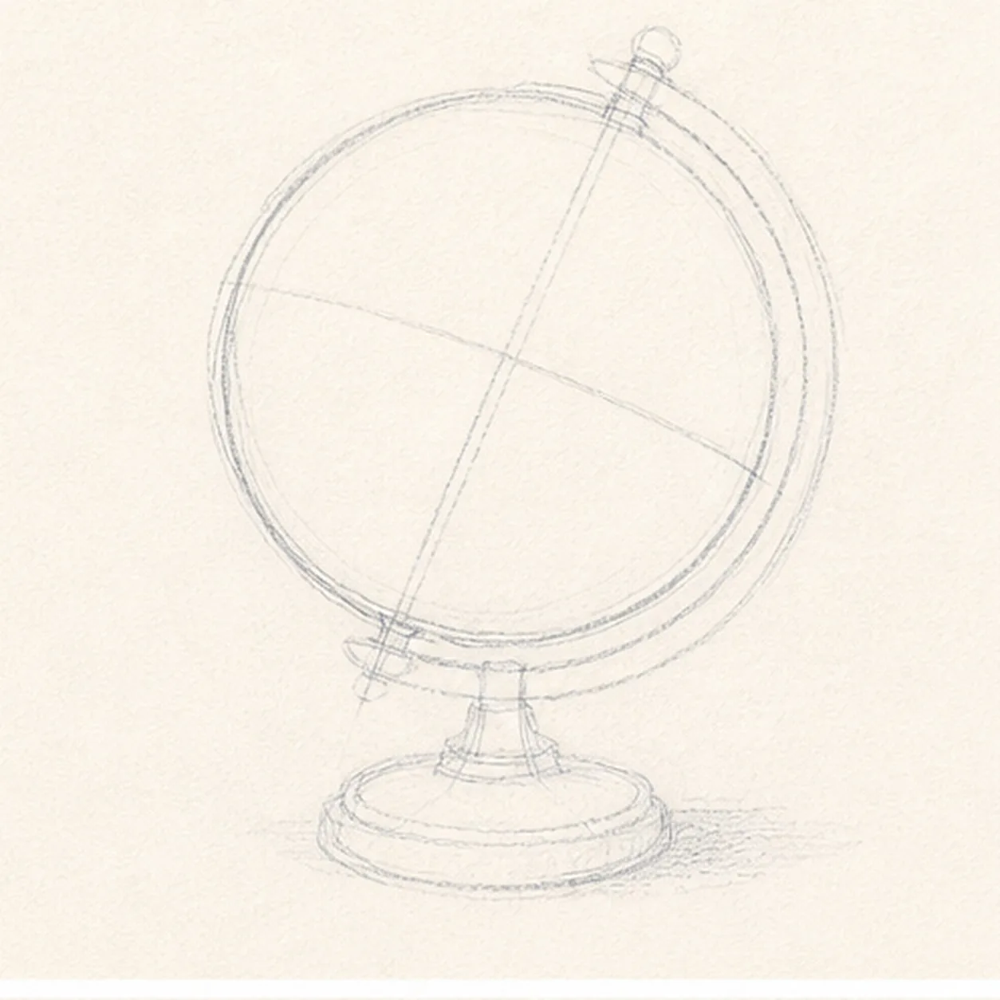
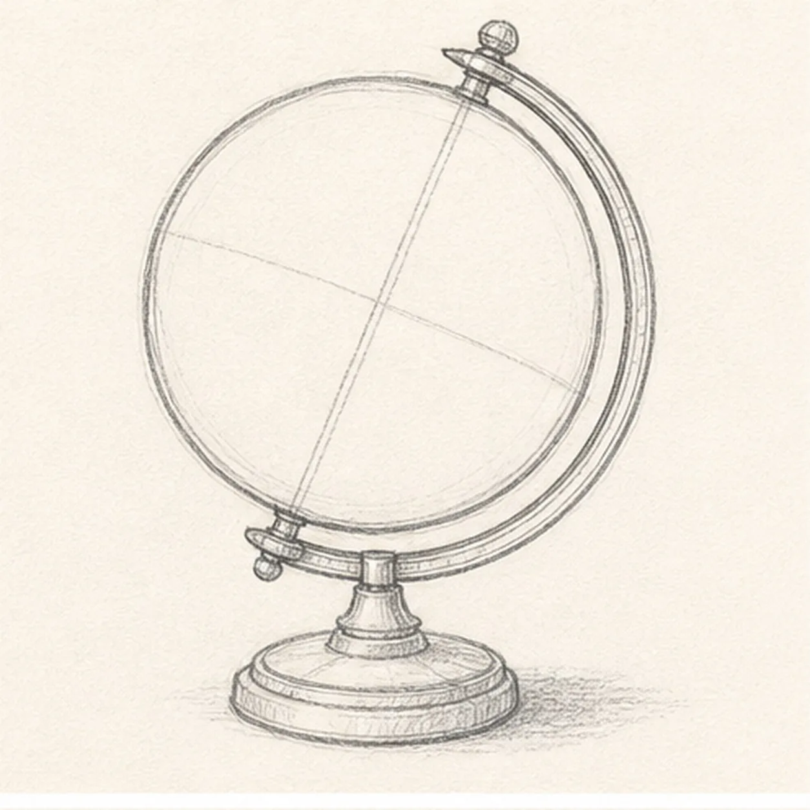
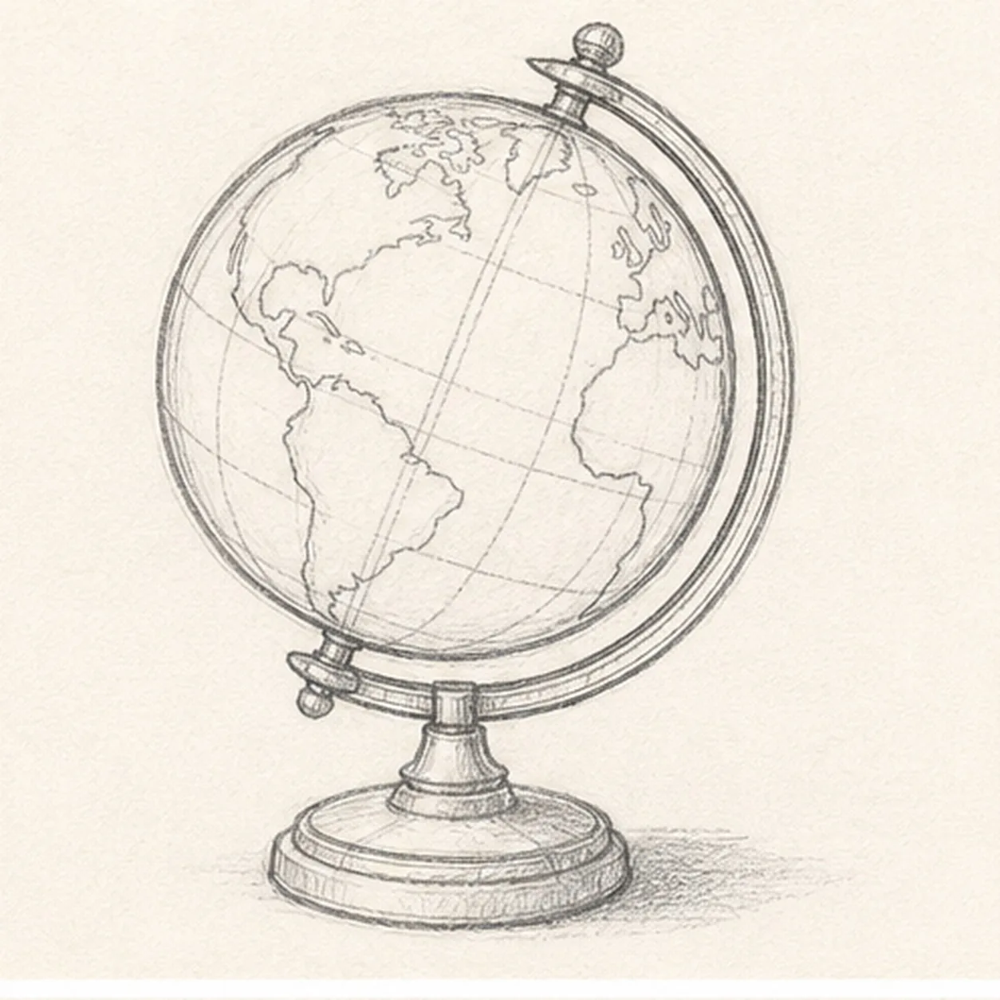
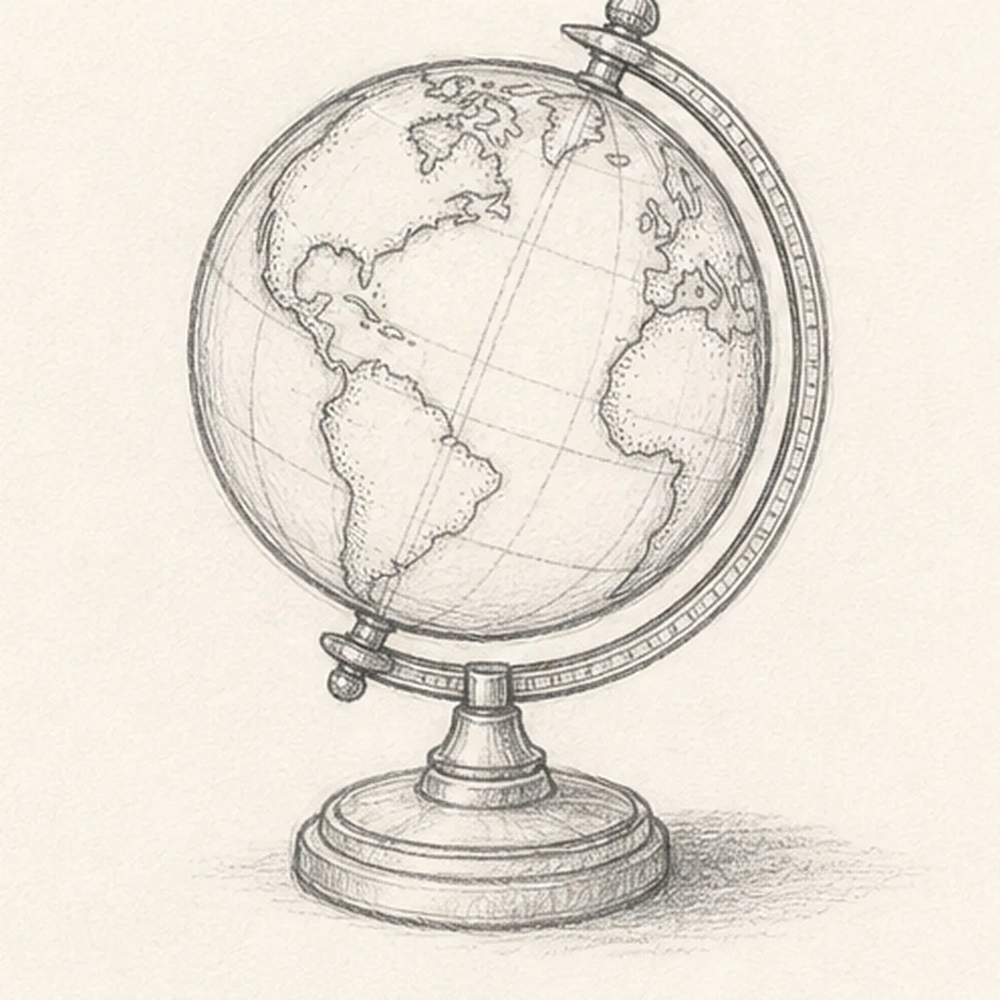
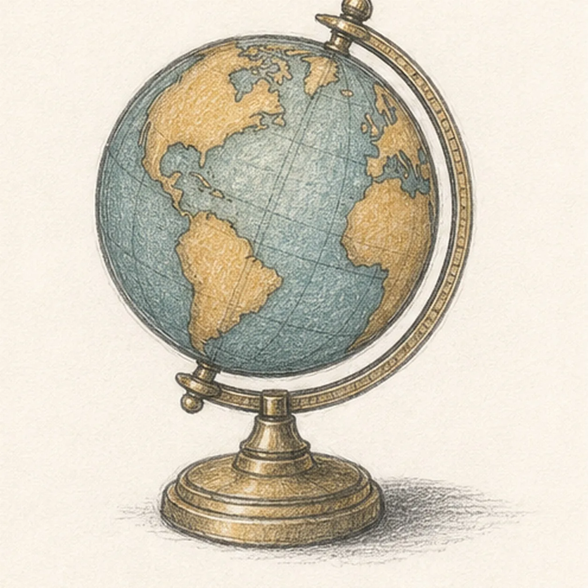

From the archive
Let's draw a vintage desk globe
Treat this as one small practice round: build the subject lightly, notice the shapes, then darken only the lines that help the finished sketch.
-
01

Set the globe's tilt
Draw one pale globe circle with a diagonal polar axis, then place the outer meridian arc, two pivot reserves, one short centered pedestal, a round base footprint, and a broken shadow footprint.
Sketch tip: Ghost the circle several times from the shoulder, then turn the page to draw the axis in one relaxed pass. Keep the support arc just outside the sphere so a clear paper channel remains between them.
-
02

Build the globe and stand
Wrap the guides with the globe edge, complete meridian support, top and lower pivot knobs, short pedestal stem, stepped collar, and low round base.
Sketch tip: Rotate the page for the support arc and base ellipses. Compare the two visible base edges as a pair, and stop hidden pedestal lines where the globe overlaps them.
-
03

Map the curved surface
Add a small group of simplified continent silhouettes without text or borders, then bend a few latitude and longitude lines around the established sphere.
Sketch tip: Treat each landmass as a simple torn-paper shape rather than a geography test. Curve every coordinate line toward the globe edge so the circle reads as a volume.
-
04

Add the vintage hardware
Add small pivot caps, meridian edge bands, pedestal seams, concentric base rings, restrained hatching along a few map edges, and one broken graphite cast shadow.
Sketch tip: Keep the hardware marks shorter and darker than the map lines. Follow the base ellipses when adding rings, and let the shadow break apart before it becomes a smooth digital-looking oval.
-
05

Shade the old-world materials
Model the established form with graphite, add dusty teal to the ocean, warm ochre to the land, muted brass to the support and base, charcoal accents, and preserved paper highlights.
Sketch tip: Pull colored-pencil strokes around the sphere instead of straight across it. Leave pale islands of paper in the ocean, metal, and base so the drawing keeps its handmade tooth.
-
06

Settle the vintage globe finish
Strengthen the keeper contours and clarify the established globe, meridian support, pivot knobs, pedestal, base, continent shapes, coordinate curves, vintage color, paper highlights, and broken shadow.
Sketch tip: Trace the diagonal axis from top pivot to lower pivot, check that no label has slipped into the map, then stop before the whole sphere becomes equally dark. Your land shapes and colors can vary while the sphere-and-stand construction stays useful.